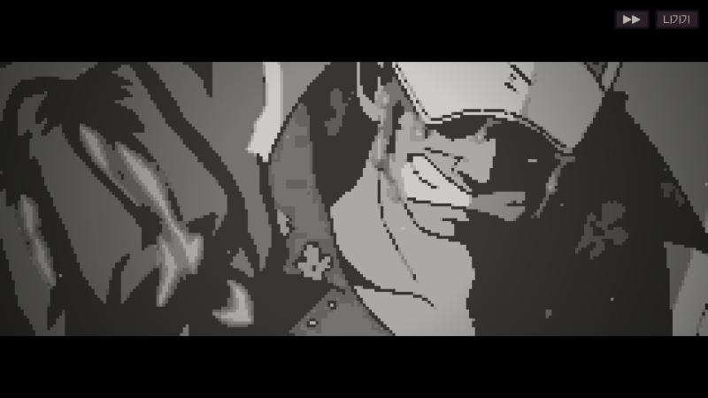
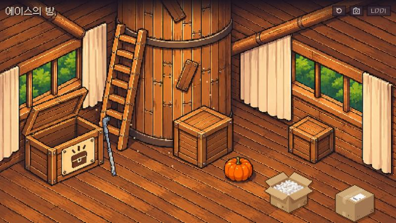
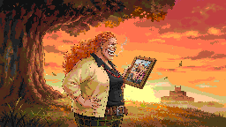
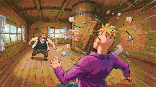
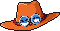
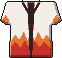

만화는 그가 쓰러지는 장면에서 다음 화로 넘어간다.
남은 사람들이 어떻게 지냈는지는 나오지 않는다.
몇 주 후
다단의 집, 에이스가 쓰던 방.
주인은 없고, 택배 상자 몇 개가 와 있다.
당신은 상자를 하나씩 열어
물건을 있어야 할 자리에 놓는다.
당신이 누군지는
방을 다 치우고 나서야 알게 된다.
《메멘토리움》은 원작에서 죽음을 맞은 캐릭터가 쓰던 방을 정리하는 도트 게임입니다. 상자에서 유품을 하나씩 꺼내 제자리에 놓다 보면, 그 사람이 어떻게 살았는지가 방 안에 다시 채워집니다.
지금은 에이스 편 데모를 브라우저에서 바로 플레이할 수 있습니다.

만화는 그가 쓰러지는 장면에서 다음 화로 넘어간다.
남은 사람들이 어떻게 지냈는지는 나오지 않는다.
다단의 집, 에이스가 쓰던 방.
주인은 없고, 택배 상자 몇 개가 와 있다.
당신은 상자를 하나씩 열어
물건을 있어야 할 자리에 놓는다.
당신이 누군지는
방을 다 치우고 나서야 알게 된다.

원작 속 마지막 장면에서 이야기가 시작됩니다. 대사를 넘기며 그날을 따라가다 보면, 방에 들어서기 전부터 마음의 준비가 됩니다.

상자를 열고 물건을 원하는 곳에 끌어다 놓습니다. 어디에 두어야 그 사람다운지는 직접 생각해야 합니다.

정리를 마치면 방을 사진으로 찍습니다. 놓은 대로 엔딩이 달라지고, 본 엔딩은 로그북 앨범에 모입니다. 방을 정리한 ‘당신’이 누구인지도 이때 알게 됩니다.
물건을 어떻게 놓았느냐에 따라 결말이 갈립니다. 하나는 먼저 보여 드리고, 나머지는 직접 찾아보세요.
 1. 다녀왔어
1. 다녀왔어
2 3
3 4
4
5캐릭터마다 한 권의 로그북, 한 개의 방이 있습니다. 앞 권의 진엔딩을 보면 다음 권이 열립니다.

불꽃은 꺼져도
남은 온기는 사라지지 않는다.
최강은 떠났어도
그가 남긴 청춘은 계속된다.

마음을 불태워라.
그 불꽃은 남은 이들에게 옮겨붙는다.
· · ·
🔒 렌고쿠 진엔딩 후 열람· · ·
🔒 에렌 진엔딩 후 열람《언패킹》은 이삿짐을 풀며 한 사람의 새 출발을 보여 주는 게임이었습니다. 《메멘토리움》은 같은 손길을 반대편으로 돌려, 떠난 사람의 짐을 정리하는 시간을 그립니다.
좋아하는 캐릭터가 죽으면 원작은 다음 이야기로 넘어갑니다. 카메라가 비추지 않은 그 뒤의 시간, 남겨진 사람들이 방을 치우고 그를 기억하는 과정을 게임으로 만들고 싶었습니다.
데모판 · 설치 없이 브라우저에서 바로